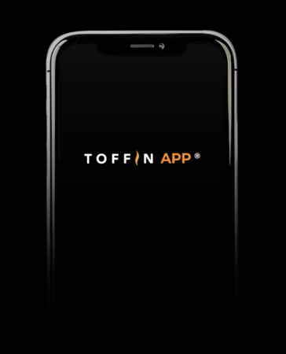

Platform digital B2B pertama yang dirancang khusus untuk industri HORECA Indonesia. Lakukan pengadaan bahan baku, monitoring performa mesin, dan manajemen operasional bisnis Anda secara terintegrasi dalam satu aplikasi — kapan pun, di mana pun.

Toffin App dikembangkan berdasarkan pemahaman mendalam atas kebutuhan operasional kafe dan restoran di Indonesia — bukan adaptasi dari aplikasi generik.
Fitur belanja personal dengan harga terbaik. Temukan perlengkapan kelas dunia dengan harga kompetitif yang telah disepakati.
Rekomendasi produk sesuai dengan kebutuhan dengan teknologi artificial intelligence. Di sini Anda bisa dengan mudah melihat produk yang sesuai dengan bisnis Anda.
Dapatkan kemudahan belanja jasa seperti pelatihan barista, panggil teknisi untuk perawatan atau perbaikan mesin melalui fitur Service Credit. Fitur ini sejenis deposit (dalam bentuk rupiah) yang bisa Anda top up untuk belanja produk dan jasa yang lebih hemat.
Bebas pilih ekspertis dan sales representative untuk ngobrol di fitur live chat. Tanya seputar produk, spesifikasi, hingga konsultasi secara gratis melalui chat atau video call.
Fitur bantuan personal untuk konsultasi segala hal dalam dunia F&B dengan teknologi GPT 4o.
Anti was-was dengan live tracking untuk melihat perjalanan orderan Anda. Barang akan dikirimkan dari cabang Toffin terdekat dengan kota Anda. Jika tidak, Anda bisa melihat stok yang masih tersedia di kota lain.
Belanja nyaman dengan jaminan perawatan dan perbaikan dari Toffin Indonesia. Seluruh produk yang dijual di Toffin App terjamin orisinal dan berkualitas.
Kumpulin poinnya, nikmatin potongannya. Setiap pembelian produk di Toffin App, akan mendapatkan points yang bisa digunakan untuk transaksi selanjutnya.
Toffin App ini benar-benar lengkap untuk semua yang butuh informasi seputar kopi dan F&B! Aplikasinya memudahkan saya dalam mencari kebutuhan bisnis kopi, mulai dari pelatihan barista, edukasi kopi, hingga pembelian mesin kopi berkualitas. Sangat membantu, terutama untuk yang baru memulai bisnis di bidang kopi.
Pemesanan bahan baku yang dulu makan waktu 1 jam sehari, sekarang selesai dalam 5 menit. ROI-nya jelas terasa dari penghematan waktu dan berkurangnya human error.
Karena aplikasi ini usaha kopi saya jadi lebih tertata baik dalam segi perbelanjaan ataupun dalam segi pendataan. Cocok banget untuk yang memiliki usaha F&B seperti saya karena semua fitur di dalam aplikasi Toffin ini sangat membantu.
Unduh sekarang dan mulai dalam hitungan menit.